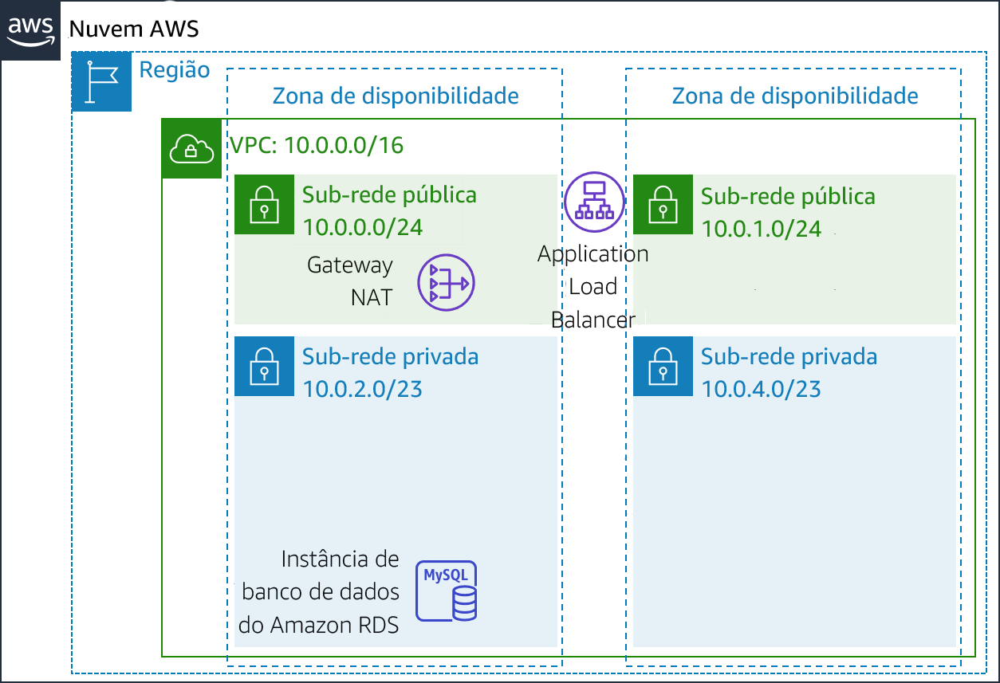
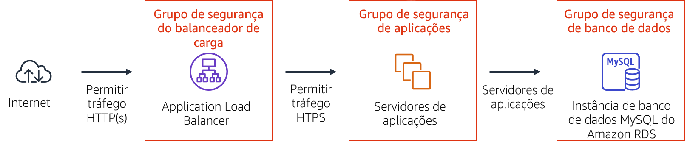
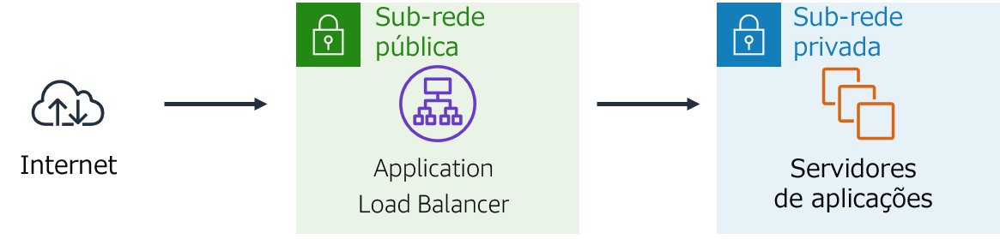

Módulo 9 – Laboratório guiado: Criar um ambiente altamente disponível
Visão geral e objetivos do laboratório
Sistemas essenciais para os negócios devem ser implantados como aplicações altamente disponíveis, ou seja, as aplicações permanecem operacionais mesmo quando alguns componentes falham. Para obter alta disponibilidade na Amazon Web Services (AWS), recomendamos que você execute serviços em várias zonas de disponibilidade.
Muitos serviços da AWS são inerentemente altamente disponíveis, como os load balancers, ou podem ser configurados para atingir alta disponibilidade, como a implantação de instâncias do Amazon Elastic Compute Cloud (Amazon EC2) em várias zonas de disponibilidade.
Neste laboratório, você começará com uma aplicação que é executada em uma única instância do EC2. Depois, você tornará a aplicação altamente disponível.
Depois de concluir este laboratório, você deverá ser capaz de:
- Inspecionar uma Virtual Private Cloud (VPC)
- Criar um Application Load Balancer
- Criar um grupo de Auto Scaling
- Testar a alta disponibilidade da aplicação
No final deste laboratório, sua arquitetura será semelhante ao seguinte exemplo:

##Duração
O laboratório levará aproximadamente 40 minutos para ser concluído.
Restrições de serviço da AWS
Neste ambiente de laboratório, o acesso aos serviços e ações de serviço da AWS pode estar restrito àqueles necessários para concluir as instruções do laboratório. Você poderá encontrar erros se tentar acessar outros serviços ou executar ações além do que está descrito neste laboratório.
Acessar o Console de Gerenciamento da AWS
Na parte superior destas instruções, escolha Start Lab (Iniciar laboratório) para iniciar o laboratório.
Um painel Start Lab (Iniciar laboratório) é aberto com o status do laboratório.
Dica: se você precisar de mais tempo para concluir o laboratório, escolha novamente o botão Start Lab (Iniciar laboratório) para reiniciar o cronômetro do ambiente.
Aguarde até que o painel Start Lab (Iniciar laboratório) exiba a mensagem Lab status: ready (Status do laboratório: pronto) e, em seguida, escolha X para fechar o painel.
Na parte superior destas instruções, escolha AWS.
Essa ação abrirá o Console de Gerenciamento da AWS em uma nova guia do navegador. O sistema fará seu login automaticamente.
Dica: se uma nova guia do navegador não for aberta, normalmente você verá uma faixa ou um ícone na parte superior do navegador com uma mensagem informando que o navegador está impedindo que o site abra janelas pop-up. Escolha a faixa ou o ícone e depois Allow pop ups (Permitir pop-ups).
Organize a guia do Console de Gerenciamento da AWS para que ela seja exibida com essas instruções. O ideal é ver as duas guias do navegador abertas ao mesmo tempo, para facilitar o acompanhamento das etapas do laboratório.
Não altere a região, a menos que seja especificamente instruído a fazer isso.
Tarefa 1: inspecionar sua VPC
O laboratório começa com um ambiente já implantado pelo AWS CloudFormation, incluindo:
- Uma VPC
- Sub-redes públicas e privadas em duas zonas de disponibilidade
- Um gateway da Internet (não mostrado no diagrama) associado às sub-redes públicas
- Um gateway NAT em uma das sub-redes públicas
- Uma instância do Amazon Relational Database Service (Amazon RDS) em uma das sub-redes privadas

Nesta tarefa, você analisará a configuração da VPC que já foi criada para este laboratório.
No Console de Gerenciamento da AWS, no menu Services (Serviços), escolha VPC.
No painel de navegação à esquerda, em Filter by VPC (Filtrar por VPC), clique em a caixa Select a VPC (Selecionar uma VPC) e depois Lab VPC.
Essa configuração limitará o console para mostrar apenas os recursos associados à Lab VPC.
No painel de navegação à esquerda, escolha Your VPCs (Suas VPCs).
Aqui, você pode acessar informações sobre a Lab VPC criada para você.
A coluna CIDR tem um valor de 10.0.0.0/16, o que significa que essa VPC inclui todos os endereços IP que começam com 10.0.x.x.
No painel de navegação à esquerda, escolha Subnets (Sub-redes).
Aqui, você pode acessar informações sobre a Sub-rede pública 1:
- A coluna VPC mostra que essa sub-rede existe dentro da Lab VPC.
- A coluna CIDR IPv4 tem um valor de 10.0.0.0/24, o que significa que essa sub-rede inclui os 256 endereços IP entre 10.0.0.0 e 10.0.0.255. Cinco desses endereços são reservados e inutilizáveis.
- A coluna Zona de disponibilidade lista a zona de disponibilidade em que esta sub-rede reside.
Para revelar mais detalhes na parte inferior da página, selecione Sub-rede pública 1.
Dica: para ajustar o tamanho do painel inferior da janela, você pode arrastar o divisor.
Na metade inferior da página, escolha a guia Route Table (Tabela de rotas).
Esta guia inclui detalhes sobre o roteamento para esta sub-rede:
- A primeira entrada especifica que o tráfego destinado ao intervalo de roteamento interdomínio sem classe (CIDR) para a VPC (10.0.0.0/16) será roteado dentro da VPC (local).
- A segunda entrada especifica que qualquer tráfego destinado à Internet (0.0.0.0/0) é encaminhado para o gateway da Internet (igw-). Essa configuração torna a sub-rede pública.
Escolha a guia Network ACL.
Essa guia tem informações sobre a lista de controle de acesso à rede (Network ACL) associada à sub-rede. As regras atualmente permitem que todo o tráfego flua para dentro e para fora da sub-rede, mas é possível restringir ainda mais as regras usando grupos de segurança.
No painel de navegação à esquerda, escolha Internet Gateways (Gateways da Internet).
Observe que um gateway da Internet já está associado à Lab VPC.
- No painel de navegação à esquerda, escolha Security Groups (Grupos de segurança).
- Selecione Banco de dados do inventário.
Esse grupo de segurança controla o tráfego de entrada para o banco de dados.
Na parte inferior da página, escolha a guia Inbound rules (Regras de entrada).
Essas regras permitem tráfego de entrada para o MySQL ou do Aurora (porta 3306) de qualquer lugar na VPC (10.0.0.0/16). Mais tarde, você modificará essa configuração para que ela aceite apenas o tráfego dos servidores de aplicações.
Escolha a guia Outbound Rules (Regras de saída).
Por padrão, os grupos de segurança permitem todo o tráfego de saída. No entanto, essa configuração pode ser modificada conforme necessário.
Tarefa 2: criar um Application Load Balancer
Para criar uma aplicação altamente disponível, uma das melhores práticas é iniciar recursos em várias zonas de disponibilidade. Zonas de disponibilidade são datacenters (ou grupos de datacenters) fisicamente separados na mesma região. Se você executar suas aplicações em várias zonas de disponibilidade, poderá fornecer maior disponibilidade caso um datacenter sofra uma falha.
Como a aplicação é executada em vários servidores, você precisará de uma maneira de distribuir tráfego entre eles. Isso pode ser feito usando um balanceador de carga. Esse balanceador de carga também realizará verificações de integridade em instâncias e enviará solicitações somente para instâncias íntegras.

No menu Services (Serviços), escolha EC2.
No painel de navegação à esquerda, escolha Load Balancers (Balanceadores de carga) (pode ser necessário rolar para encontrar essa opção).
Escolha Create Load Balancer (Criar Load Balancer)
Vários tipos de balanceadores de carga são exibidos. Leia as descrições de cada tipo para entender suas capacidades.
Em Application Load Balancer, escolha Create (Criar)
Em Nome, insira:
Inventory-LBRole até a seção Availability Zones (Zonas de disponibilidade) e, para VPC, selecione Lab VPC.
Agora você especificará quais sub-redes o balanceador de carga deve usar. Ele será um balanceador de carga voltado para a Internet, portanto você selecionará as duas sub-redes públicas.
Escolha a primeira zona de disponibilidade e a Public Subnet (Sub-rede pública) exibida.
Escolha a segunda zona de disponibilidade e a Public Subnet (Sub-rede pública) exibida.
Agora você deve ter duas sub-redes selecionadas: Sub-rede pública 1 e Sub-rede pública 2. (Caso contrário, volte e tente a configuração novamente.)
Escolha Next: Configure Security Settings (Próximo: Definir as configurações de segurança)
É exibido um aviso recomendando que você use HTTP Seguro (HTTPS) para melhorar a segurança. Esse é um bom conselho, mas não é necessário para este laboratório.
Escolha Next: Configure Security Groups (Próximo: Configurar grupos de segurança)
Agora, você criará um grupo de segurança que aceite todo o tráfego HTTP e HTTPS de entrada.
Selecione Crie um novo grupo de segurança e, depois, configure:
- Nome do grupo de segurança:
Inventory-LB - Descrição:
Habilitar acesso do balanceador de carga à Web
- Nome do grupo de segurança:
Configure a regra existente (que já está na página) como:
- Tipo: HTTP
- Origem: qualquer lugar
Escolha Add Rule (Adicionar regra) e configure:
- Tipo: HTTPS
- Origem: qualquer lugar
Essas configurações aceitarão todas as solicitações HTTP e HTTPS recebidas.
Escolha Next: Configure Routing (Próximo: Configurar roteamento)
Grupos de destino definem para onde enviar o tráfego que entra no balanceador de carga. O Application Load Balancer pode enviar tráfego para vários grupos de destino com base no URL da solicitação recebida. Um exemplo seria enviar solicitações de aplicativos móveis a um conjunto diferente de servidores. Sua aplicação Web usará apenas um grupo de destino.
Em Nome, insira:
Inventory-AppExpanda Configurações avançadas de verificação de integridade.
O Application Load Balancer executa automaticamente verificações de integridade em todas as instâncias para garantir que elas estejam respondendo às solicitações. As configurações padrão são recomendadas, mas isso fará com que elas sejam um pouco mais rápidas neste laboratório.
Configure estes valores:
- Limite de integridade:
2 - Intervalo:
10
Isso significa que a verificação de integridade será executada a cada 10 segundos. Se a instância responder corretamente duas vezes seguidas, ela será considerada íntegra.
- Limite de integridade:
Escolha Next: Register Targets (Próximo: Registrar destinos)
Destinos são as instâncias individuais que responderão às solicitações do balanceador de carga. Você ainda não tem nenhuma instância de aplicação Web, portanto pode ignorar esta etapa.
Escolha Next: Review (Próximo: Revisar)
Revise as configurações. Escolha Create (Criar) e Close (Fechar)
Agora, seu balanceador de carga será provisionado em segundo plano. Você não precisa esperar.
Tarefa 3: criar um grupo de Auto Scaling
O Amazon EC2 Auto Scaling é um serviço feito para executar ou encerrar instâncias do Amazon EC2 automaticamente com base em políticas, programações e verificações de integridade definidas pelo usuário. Ele também distribui automaticamente instâncias em várias zonas de disponibilidade para tornar as aplicações altamente disponíveis.
Nesta tarefa, você criará um grupo de Auto Scaling que implanta instâncias do EC2 em sub-redes privadas, o que é uma das melhores práticas de segurança para a implantação de aplicações. As instâncias de uma sub-rede privada não podem ser acessadas pela Internet. Em vez disso, os usuários enviam solicitações para o balanceador de carga, que encaminha as solicitações para instâncias do EC2 nas sub-redes privadas.

Criar uma AMI para o Auto Scaling
Nesta tarefa, você criará uma AMI a partir do Servidor da Web 1 existente. Isso salvará o conteúdo do disco de execução para que novas instâncias possam ser executadas com conteúdo idêntico.
No Console de Gerenciamento da AWS, no menu Services (Serviços), clique em EC2.
No painel de navegação esquerdo, clique em Instances (Instâncias).
Primeiro, você confirmará que a instância está em execução.
Aguarde até que as Status Checks (Verificações de status) para o Web Server 1 (Servidor da Web 1) exiba 2/2 checks passed (2/2 verificações aprovadas). Clique em Refresh (Atualizar) para atualizar.
Agora, você criará uma AMI com base nessa instância.
Selecione Web Server 1 (Servidor da Web 1).
No menu Actions (Ações), clique em Image (Imagem) > Create Image (Criar imagem) e configure:
- Image name (Nome da imagem):
Web Server AMI (AMI do servidor da Web) - Descrição da imagem:
AMI do laboratório para o servidor da Web
- Image name (Nome da imagem):
Clique em Create image (Criar imagem)
A tela de confirmação exibe o ID da AMI para a nova AMI.
Clique em Close (Fechar)
Você usará essa AMI ao iniciar o grupo de Auto Scaling posteriormente no laboratório.
Criar uma configuração de execução e um grupo de Auto Scaling
Primeiro, você criará uma configuração de execução que define o tipo de instâncias que o Amazon EC2 Auto Scaling deve executar. A interface é semelhante a quando você executa uma instância do EC2. No entanto, em vez de executar uma instância, ela armazena a configuração para uso posterior.
No painel de navegação à esquerda, escolha Launch Configurations (Configurações de execução).
Escolha Create launch configuration (Criar configuração de execução)
Defina estas configurações:
Nome da configuração de execução:
Inventory-LCImagem de máquina da Amazon (AMI): escolha Web Server AMI (AMI do servidor da Web)
Tipo de instância:
- Selecione Choose instance type (Escolher tipo de instância)
- Selecione t3.micro
- Escolha Choose (Escolher)
Observação: se você executou o laboratório na região us-east-1, selecione o tipo de instância t2.micro. Para localizar a região, olhe no canto superior direito do console do Amazon EC2.
Observação: se você receber a mensagem de erro "Algo deu errado. Atualize e tente novamente.", ignore-a e prossiga com o exercício.
Configuração adicional
- IAM instance profile (Perfil de instância do IAM): selecione Inventory-App-Role
Monitoring (Monitoramento): selecione Enable EC2 instance detailed monitoring within CloudWatch (Habilitar monitoramento detalhado de instância do EC2 no CloudWatch)
Isso permite que o Auto Scaling reaja rapidamente a alterações na utilização.
Expanda Detalhes avançados. Em Dados do usuário, copie e cole este script:
# Install Apache Web Server and PHPyum install -y httpd mysqlamazon-linux-extras install -y php7.2# Download Lab fileswget https://aws-tc-largeobjects.s3-us-west-2.amazonaws.com/ILT-TF-200-ACACAD-20-EN/mod9-guided/scripts/inventory-app.zipunzip inventory-app.zip -d /var/www/html/# Download and install the AWS SDK for PHPwget https://github.com/aws/aws-sdk-php/releases/download/3.62.3/aws.zipunzip aws -d /var/www/html# Turn on web serverchkconfig httpd onservice httpd start- Em Grupos de segurança
- Select an existing security group (Selecione um grupo de segurança existente): Inventory-App
Será exibido um aviso de que Você não será capaz de se conectar à instância. Ignore esse aviso, porque você não se conectará à instância. Toda a configuração é feita pelo script de dados do usuário.
- Em Par de chaves (login):
- Selecione Proceed without a key pair (Prosseguir sem um par de chaves)
- Selecione Reconheço que...
- Escolha Create launch configuration (Criar configuração de execução)
A configuração de execução definiu o que executar, mas o grupo de Auto Scaling define onde executar os recursos.
Na tabela Launch configurations (Configurações de execução), selecione Inventory-LC.
No menu Actions (Ações), escolha Create Auto Scaling group (Criar grupo de Auto Scaling)
Insira o nome do grupo de Auto Scaling:
- Nome:
Inventory-ASG(ASG significa grupo de Auto Scaling, na sigla em inglês)
- Nome:
Escolha Next (Próximo)
Na página Network (Rede), configure
- VPC: Lab VPC
- Subnet (Sub-rede): selecione Sub-rede privada 1 e Sub-rede privada 2
Você pode ignorar o aviso que diz Nenhum endereço IP público será atribuído. As instâncias do EC2 serão executadas em uma sub-rede privada, então não necessitam de endereços IP públicos.
Isso executará instâncias do EC2 em sub-redes privadas em ambas as zonas de disponibilidade.
Escolha Next (Próximo)
Em Balanceamento de carga:
- Selecione Enable load balancing (Habilitar balanceamento de carga)
- Escolha Application Load Balancer or Network Load Balancer (Application Load Balancer ou Network Load Balancer)
- Escolha um grupo de destino para o balanceador de carga: Inventory-App
Essas configurações dizem ao grupo de Auto Scaling para registrar novas instâncias do EC2 como parte do grupo-alvo do Application-App criado anteriormente. O balanceador de carga enviará tráfego para instâncias que estão nesse grupo de destino.
Em Verificações de integridade:
- Selecione ELB
- Período de carência da verificação de integridade: 90
- Em Configurações adicionais:
- selecione Habilitar coleta de métricas de grupo no CloudWatch
Escolha Next (Próximo)
Em Group Size (Tamanho do grupo), configure:
- Desired capacity (Capacidade desejada): 2
- Capacidade mínima: 2
- Capacidade máxima: 2
Em Scaling policies (Políticas de escalabilidade), escolha None (Nenhuma).
Para este laboratório, você manterá duas instâncias em todos os momentos para garantir alta disponibilidade. Caso espere-se que a aplicação receberá cargas variadas de tráfego, você também pode criar políticas de dimensionamento, que definem quando executar ou encerrar instâncias. No entanto, você não precisa criar políticas de disponibilidade para a aplicação de inventário deste laboratório.
Escolha Next (Próximo)
Na página Add notifications (Adicionar notificações), escolha Next (Avançar). Não é necessário alterar essas configurações.
Na página Add tags (Adicionar tags), escolha Add tag (Adicionar tag)
- Key (Chave):
Name (Nome) - Valor:
Inventory-App - Selecione Próximo
Essas configurações atribuirão uma tag ao grupo de Auto Scaling com um nome, que também aparecerá nas instâncias do EC2 que são executadas pelo grupo de Auto Scaling. Você pode usar tags para identificar quais instâncias do Amazon EC2 estão associadas a quais aplicações. Você também pode adicionar tags como Centro de custo para atribuir custos de aplicações nos arquivos de faturamento.
- Key (Chave):
Na página **Review (Revisão):
- Escolha Create Auto Scaling group (Criar grupo de Auto Scaling)
Inventory-ASG aparecerá no console:

A revisão mostra que:
- No momento, o grupo não tem instâncias, mas o ícone de informações indica que as instâncias estão sendo executadas. (Passe sobre o ícone para obter mais detalhes.)
- A quantidade desejada é 2 instâncias. O Amazon EC2 Auto Scaling tentará executar duas instâncias para alcançar a quantidade desejada
- O mínimo e o máximo também serão definidos como 2 instâncias. O Amazon EC2 Auto Scaling tentará sempre fornecer duas instâncias, mesmo que haja falhas.
A aplicação logo será executada em duas zonas de disponibilidade. O Amazon EC2 Auto Scaling manterá essa configuração mesmo que alguma instância ou zona de disponibilidade falhe.
Depois de um minuto, escolha Atualize para ver a nova exibição. Ela deve mostrar que 2 instâncias estão em execução.
Tarefa 4: atualizar grupos de segurança
A aplicação que você implantou é uma arquitetura de três camadas. Agora você configurará os grupos de segurança para reforçar estas camadas:

Grupo de segurança do balanceador de carga
Você já configurou o grupo de segurança do balanceador de carga quando criou o balanceador de carga. Ele aceita todo o tráfego HTTP e HTTPS de entrada.
O balanceador de carga foi configurado para encaminhar as solicitações recebidas para um grupo de destino. Quando o Auto Scaling executar novas instâncias, ele automaticamente adicionará essas instâncias ao grupo de destino.
Grupo de segurança da aplicação Web
O grupo de segurança de aplicações foi fornecido como parte da configuração do laboratório. Agora você o configurará para aceitar apenas o tráfego de entrada do balanceador de carga.
- No painel de navegação à esquerda, escolha Security Groups (Grupos de segurança).
- Selecione Inventory-App.
- Na parte inferior da página, escolha a guia Inbound rules (Regras de entrada).
O grupo de segurança está vazio no momento. Agora você adicionará uma regra para aceitar o tráfego HTTP de entrada do balanceador de carga. Você não precisa configurar o tráfego HTTPS porque o balanceador de carga foi configurado para encaminhar solicitações HTTPS via HTTP. Essa prática passa a segurança para o balanceador de carga, reduzindo a quantidade de trabalho exigida pelos servidores de aplicações individuais.
- Escolha Edit inbound rules (Editar regras de entrada).
- Na página Edit inbound rules (Editar regras de entrada), escolha Add rule (Adicionar regra) e defina estas configurações:
Tipo: HTTP
Origem:
- Clique na caixa de pesquisa ao lado de Custom (Personalizado)
- Exclua o conteúdo atual
- Digite
sg - Selecione Inventory-LB na lista que será exibida
Descrição:
tráfego do balanceador de cargaEscolha Save rules (Salvar regras)
Os servidores de aplicações agora podem receber tráfego do balanceador de carga. Isso inclui verificações de integridade que o balanceador de carga executa automaticamente.
Grupo de segurança de banco de dados
Agora, você configurará o grupo de segurança do banco de dados para aceitar apenas o tráfego de entrada dos servidores de aplicações.
- Selecione Inventory-DB (e garanta que nenhum outro grupo de segurança esteja selecionado).
A regra existente permite tráfego na porta 3306 (usada pelo MySQL) de qualquer endereço IP dentro da VPC. Essa é uma boa regra, mas a segurança pode ser restringida ainda mais.
- Na guia Inbound rules (Regras de entrada), escolha Edit inbound rules (Editar regras de entrada) e defina estas configurações:
- Clique na caixa de pesquisa ao lado de Custom (Personalizado)
- Exclua o conteúdo atual
- Digite
sg - Selecione Inventory-App na lista exibida
- Descrição:
tráfego de servidores de aplicações - Escolha Save rules (Salvar regras)
Você acaba de configurar a segurança de três camadas. Cada elemento da camada aceita somente tráfego da camada superior.
Além disso, o uso de sub-redes privadas significa que você tem duas barreiras de segurança entre a Internet e os recursos da aplicação. Essa arquitetura segue as melhores práticas para aplicar várias camadas de segurança.
Tarefa 5: testar a aplicação
Sua aplicação agora está pronta para testes.
Nesta tarefa, você poderá confirmar se a aplicação Web está em execução e testar se ela é altamente disponível.
- No painel de navegação, escolha Target Groups (Grupos de destino).
O grupo de instâncias Inventory-App será exibido.
- Na parte inferior da página, escolha a guia Targets (Destinos).
Essa guia deve mostrar dois destinos registrados. A coluna Status mostra os resultados da verificação de integridade do balanceador de carga executada nas instâncias.
- Na área superior direita, escolha ocasionalmente Atualize até que o Status de ambas as instâncias apareça como íntegro.
Se o status não mudar para saudável, peça ajuda ao educador para diagnosticar a configuração. Passe sobre o ícone na coluna Status para acessar mais informações.
Você testará a aplicação conectando-se ao balanceador de carga, que enviará sua solicitação para uma das instâncias do EC2. Primeiro, você precisará recuperar o nome do Domain Name System (DNS) do balanceador de carga.
- No painel de navegação à esquerda, escolha Load Balancers.
- Na guia Description (Descrição) na parte inferior da página, copie o DNS Name (Nome da DNS) para a área de transferência.
Ele deve ser semelhante a: inventory-LB-xxxx.elb.amazonaws.com
- Abra uma nova guia do navegador Web, cole o nome do DNS da sua área de transferência e selecione ENTER.
O balanceador de carga encaminhou sua solicitação para uma das instâncias do EC2. O ID da instância e a zona de disponibilidade são mostrados na parte inferior da página da Web.
Recarregue a página no seu navegador da Web. Você deve notar que pode haver diferenças no ID e na zona de disponibilidade das duas instâncias.
Quando esta aplicação Web é exibida, o fluxo de informações é:

- Você enviou a solicitação para o balanceador de carga, que fica nas sub-redes públicas conectadas à internet.
- O balanceador de carga escolheu uma das instâncias do EC2 que residem nas sub-redes privada e encaminhou a solicitação para ela.
- A instância do EC2 retornou a página da Web para o balanceador de carga, que a retornou ao seu navegador da Web.
##Tarefa 6: testar a alta disponibilidade
Sua aplicação foi configurada para estar altamente disponível. Você pode comprovar a alta disponibilidade dela encerrando uma das instâncias do EC2.
Volte para a guia do Console do Amazon EC2 no navegador da Web (mas não feche a guia da aplicação Web, você retornará a ela em breve).
No painel de navegação à esquerda, escolha Instances (Instâncias).
Agora, você encerrará uma das instâncias da aplicação Web para simular uma falha.
Selecione uma das instâncias do Inventory-App (não importa qual).
Escolha Actions (Ações) e depois Instance State (Estado da instância) > Terminate (Encerrar).
Escolha Yes, Terminate (Sim, encerrar)
Em um curto período, as verificações de integridade do balanceador de carga perceberão que a instância não está respondendo e automaticamente roteará todas as solicitações para a instância restante.
Volte para a guia da aplicação Web no navegador e recarregue a página várias vezes.
Você deve notar que a zona de disponibilidade que é mostrada na parte inferior da página permanece a mesma. Embora uma instância tenha falhado, a aplicação permanece disponível.
Após alguns minutos, o Amazon EC2 Auto Scaling também notará a falha da instância. Ele foi configurado para manter duas instâncias em execução, portanto executará automaticamente uma instância de substituição.
Retorne à guia do Console do Amazon EC2 em seu navegador da Web. Na área superior direita, atualize a cada 30 segundos até que uma nova instância do EC2 seja exibida.
Após alguns minutos, a verificação de integridade da nova instância deve se tornar íntegra. O balanceador de carga continuará enviando tráfego entre duas zonas de disponibilidade. Você pode recarregar a guia da aplicação da Web para ver isso acontecer.
Essa tarefa mostra que a aplicação agora está altamente disponível.
Tarefa opcional 1: Tornar o banco de dados altamente disponível
Esta tarefa é opcional. Você pode trabalhar nela se tiver tempo sobrando no laboratório.
A arquitetura da aplicação agora está altamente disponível. No entanto, o banco de dados do Amazon RDS opera a partir de apenas uma instância de banco de dados.
Nesta tarefa opcional, você tornará o banco de dados altamente disponível. Para isso, ele será configurado para ser executado em várias zonas de disponibilidade (ou seja, em uma implantação Multi-AZ).

- No menu Services (Serviços), escolha RDS.
- No painel de navegação à esquerda, escolha Databases (Bancos de dados).
- Escolha inventory-db
Fique à vontade para explorar as informações sobre o banco de dados.
- Escolha Modify (Modificar).
- Para Multi-AZ deployment (Implantação Multi-AZ), selecione Sim.
Você só precisa fazer isso para converter o banco de dados para ser executado em vários datacenters (zonas de disponibilidade).
Essa opção não significa que o banco de dados seja distribuído em várias instâncias. Em vez disso, uma instância é a instância primária, que lida com todas as solicitações. Outra instância será executada como a instância standby, que assume se a instância primária falhar. Sua aplicação continua usando o mesmo nome DNS para o banco de dados. No entanto, as conexões serão redirecionadas automaticamente para o servidor de banco de dados ativo no momento.
Você pode dimensionar uma instância do EC2 e um banco de dados do RDS alterando atributos. Agora, você vai dimensionar o banco de dados.
- Para DB instance class (Classe da instância de banco de dados), selecione db.t3.small.
Essa ação dobra o tamanho da instância.
- Para Armazenamento alocado, insira:
10
Essa ação duplica a quantidade de espaço alocada ao banco de dados.
Sinta-se livre para explorar as outras opções da página, mas não altere nenhum valor.
- Na parte inferior da página, escolha Continue (Continuar).
A performance do banco de dados será afetada por essas mudanças. Portanto, essas alterações podem ser programadas durante uma janela de manutenção definida ou podem ser executadas imediatamente.
Em Scheduling of Modifications (Programação de modificações), selecione Aplicar imediatamente.
Escolha Modify DB instance (Modificar instância de banco de dados)
O banco de dados insere um estado de modificação enquanto aplica as alterações. Você não precisa esperar que ele seja concluído.
Tarefa opcional 2: Configurar um gateway NAT altamente disponível
Esta tarefa é opcional. Você pode trabalhar nela se tiver tempo sobrando no laboratório.
Os servidores de aplicações são executados em uma sub-rede privada. Se os servidores precisarem acessar a Internet (por exemplo, para transferir dados), as solicitações devem ser redirecionadas por um gateway NAT. (O gateway NAT deve estar em uma sub-rede pública).
A arquitetura atual tem apenas um gateway NAT na Sub-rede pública 1. Assim, se a zona de disponibilidade 1 falhar, os servidores de aplicações não poderão se comunicar com a Internet.
Nesta tarefa opcional, você tornará o gateway NAT altamente disponível executando outro gateway NAT na outra zona de disponibilidade. A arquitetura resultante será altamente disponível:

No menu Services (Serviços), escolha VPC.
No painel de navegação à esquerda, escolha NAT Gateways (Gateways NAT).
O gateway NAT existente será exibido. Agora, você criará um gateway NAT para a outra zona de disponibilidade.
Escolha Create NAT gateway (Criar gateway NAT) e defina estas configurações:
- Subnet (Sub-rede): PublicSubnet2 (selecione esta opção na lista)
Os detalhes da sub-rede estão no início dessas instruções. Escolha Details (Detalhes) e, à direita da AWS, escolha Show (Mostrar). Observe os nomes PublicSubnet2 e NATGateway1.
- Escolha Allocate Elastic IP (Alocar IP elástico)
- Escolha Create NAT gateway (Criar gateway NAT)
- Escolha Edit route tables (Editar tabelas de rotas)
Agora você criará uma nova tabela de rotas para Private Subnet 2. Essa tabela de rotas reorientará o tráfego para o novo gateway NAT.
Escolha Create route table (Criar tabela de rotas) e defina estas configurações:
- Name tag (Tag de nome):
Tabela de rotas privada 2 - VPC: Lab VPC
- Escolha Create (Criar) e Close (Fechar).
- Name tag (Tag de nome):
Selecione Tabela de rotas privada 2 e confirme que essa é a única tabela de rotas selecionada.
Escolha a guia Routes (Rotas).
Atualmente, uma rota direciona todo o tráfego locally.
Você adicionará uma rota para enviar o tráfego voltado à Internet através do novo gateway NAT.Escolha Edit routes (Editar rotas) e defina estas configurações:
- Escolha Add route (Adicionar rota)
- Destination (Destino):
0.0.0.0/0
- Target (Alvo): selecione Gateway NAT, depois a entrada nat-, que não é a entrada para NATGateway1 (que está no botão Details (Detalhes) acima destas instruções)
- Escolha Save routes (Salvar rotas) e Close (Fechar)
O gateway NAT listado sob o botão Details (Detalhes) (que está acima destas instruções) é para a Sub-rede pública 1. Você está configurando a tabela de rotas para usar o outro gateway NAT.
Abra a guia Subnet Associations (Associações de sub-rede).
Escolha Edit subnet associations (Editar associações de sub-rede).
Selecione Sub-rede privada 2.
Escolha Save (Salvar)
Essa ação agora envia o tráfego vinculado à Internet da sub-rede privada 2 para o gateway NAT que está na mesma zona de disponibilidade.
Seus gateways NAT agora estão altamente disponíveis. Uma falha em uma zona de disponibilidade não afetará o tráfego na outra zona de disponibilidade.
Enviar o trabalho
Na parte superior destas instruções, escolha Submit (Enviar) para gravar seu progresso e, quando solicitado, escolha Yes (Sim).
Se os resultados não forem exibidos após alguns minutos, volte ao topo destas instruções e escolha Grades (Notas).
Dica: você pode enviar seu trabalho várias vezes. Depois de alterar o trabalho, escolha Submit (Enviar) novamente. Seu último envio é o que será gravado para este laboratório.
Para ver o feedback detalhado do seu trabalho, escolha Details (Detalhes) e depois View Submission Report (Visualizar relatório de envio).
Laboratório concluído
Parabéns! Você concluiu o laboratório.
Escolha End Lab (Encerrar laboratório) na parte superior desta página e, em seguida, selecione Yes (Sim) para confirmar que você deseja encerrar o laboratório.
Um painel indica que A EXCLUSÃO foi iniciada... Você pode fechar esta caixa de mensagem agora.
Escolha o X no canto superior direito para fechar o painel.
©2020, Amazon Web Services, Inc. e suas afiliadas. Todos os direitos reservados. Este trabalho não pode ser reproduzido ou redistribuído, no todo ou em parte, sem permissão prévia por escrito da Amazon Web Services, Inc. É proibido copiar, emprestar ou vender para fins comerciais.